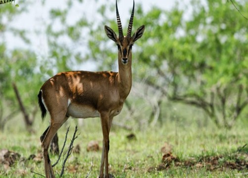
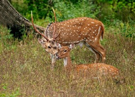

About : The sanctuary is a popular tourist destination, with the peak tourism season being from August to February. The most popular tourist activity is hiking to the top of a hill in the sanctuary, from which one can see the Krishna River flowing through fields of sugarcane and grapevines. Also in the area are numerous shrines to Shiva which were built during the Chalukya dynasty, and the Krishna Valley Wine Park in Palus. Kundal, the region around Sangli, was the capital of the Chalukyas, a historical place. Sagareshwar Wildlife Sanctuary is a protected area in the Indian state of Maharashtra. It is located at the meeting of three Tehsils of Sangli district: Kadegaon, Walva and Palus. The wildlife sanctuary is man-made; it is an artificially cultivated forest without a perennial supply of water, and most of the wildlife species were artificially introduced. It has an area of 10.87 km².
Timing : 8am–5:30pm, Tuesday closed

